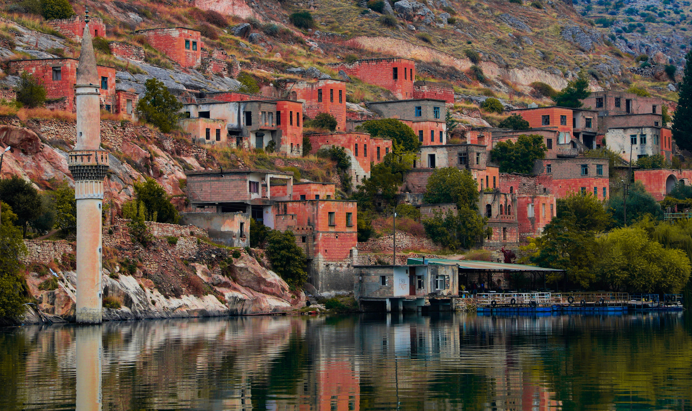
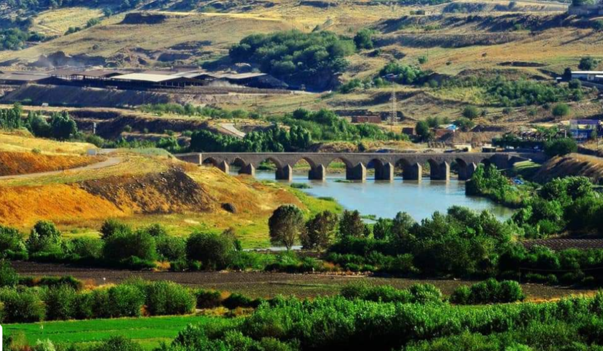
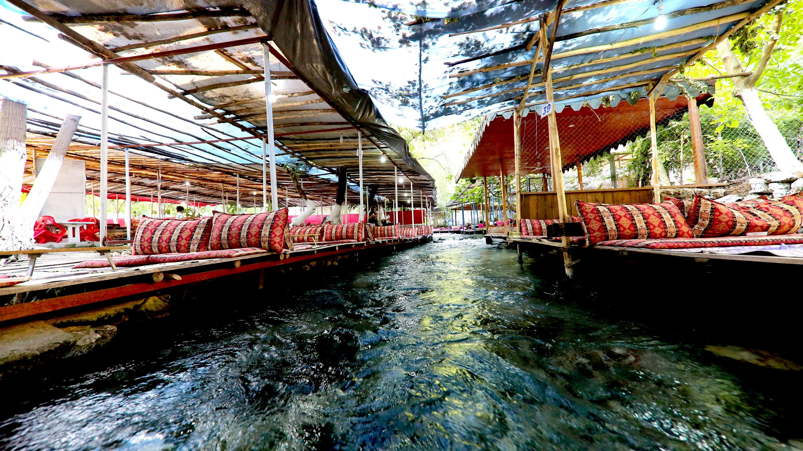

Güneydoğu Anadolu

Halfeti
Şanlıurfa’nın batısında, Fırat Nehri’nin kıyısında yer alan Halfeti, 3000 yıllık geçmişiyle adeta bir zaman kapsülüdür.
Detaylar için tıkla
Hevsel Bahçeleri
Diyarbakır Kalesi ile Dicle Nehri arasında yaklaşık 700 hektarlık bir alana yayılan Hevsel Bahçeleri, 8 bin yılı aşkın süredir kesintisiz olarak tarım yapılan, dünyanın en eski tahıl ambarlarından biridir.
Detaylar için tıkla
Mardin Beyazsu
Mardin’in Midyat ve Nusaybin ilçeleri arasında, kurak dağların arasından bir mucize gibi fışkıran Beyazsu, bölgenin en önemli su kaynağı ve doğal dinlenme alanıdır.
Detaylar için tıkla
Nemrut Dağı
Adıyaman’ın Kâhta ilçesinde yer alan ve deniz seviyesinden 2.150 metre yükseklikte bulunan Nemrut Dağı, Kommagene Kralı I. Antiochos’un tanrılara ve atalarına minnettarlığını sunmak için yaptırdığı devasa heykellere ev sahipliği yapar.
Detaylar için tıkla